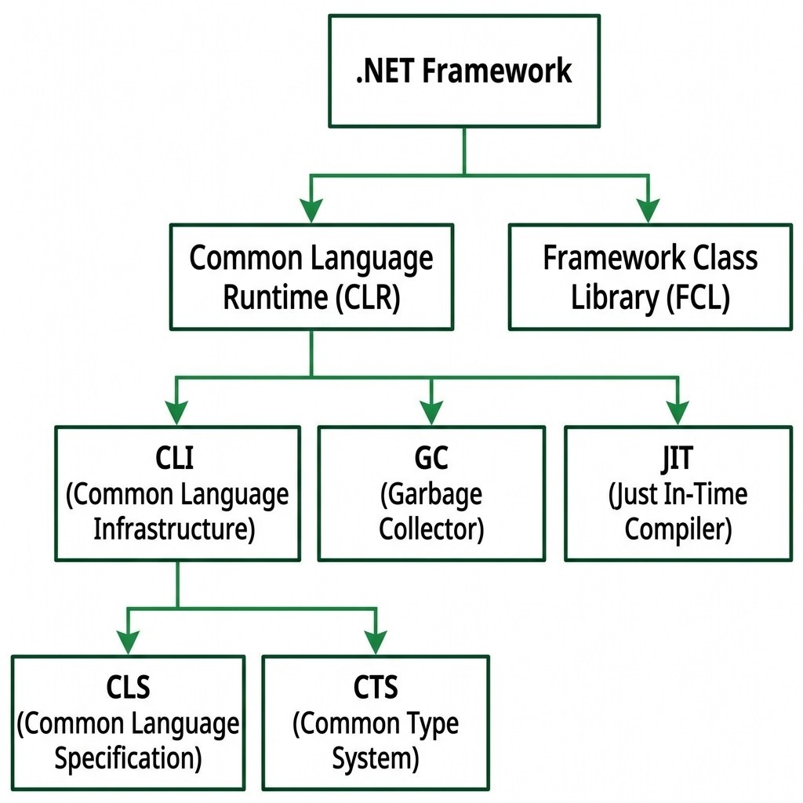

What is .NET Framework?
.NET Framework is a software development platform created by Microsoft. It provides a controlled environment where applications (Windows, Web, Mobile) can be built, deployed, and run. It acts as a bridge between the operating system and the application code, managing memory, security, and execution automatically.
.NET Framework Architecture Diagram

Core Components of .NET Framework
1. CLR (Common Language Runtime)
The execution engine of .NET. It is the heart of the framework.
- Memory Management: Automatic Garbage Collection (GC) frees unused memory.
- JIT Compilation: Converts MSIL (Intermediate Language) into native machine code at runtime.
- Exception Handling: Catches runtime errors and prevents app crashes.
- Security: Provides code access security (CAS) to protect resources.
2. FCL (Framework Class Library)
A huge collection of pre-written, reusable classes, interfaces, and methods.
- System Namespace: Contains fundamental types like String, DateTime, Math.
- ADO.NET: Classes for database connectivity (SqlConnection, SqlCommand).
- ASP.NET: Classes for building web applications and web services.
- Windows Forms / WPF: Classes for building desktop GUI applications.
- File I/O: Classes like FileStream, StreamReader for file operations.
3. CTS (Common Type System)
Defines how data types are declared and managed. All .NET languages share the same type system. For example, int in C# and Integer in VB.NET both map to System.Int32.
4. CLS (Common Language Specification)
A set of rules that all .NET languages must follow. This ensures language interoperability — code written in C# can interact with code written in VB.NET or F#.
5. MSIL (Microsoft Intermediate Language)
Source code is first compiled into MSIL (also called IL). This IL is platform-independent and is later converted to machine code by the JIT compiler at runtime.
⚡ Cheat Sheet
- CLR: Execution engine (Memory, JIT, Security)
- FCL: Ready-made classes (File I/O, Database, GUI)
- CTS: Common types across all .NET languages
- CLS: Rules for language interoperability
- MSIL: Intermediate code before JIT compilation